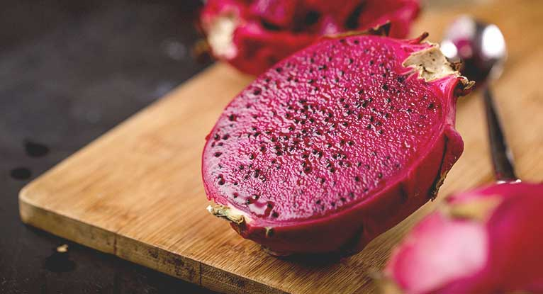

I think that pleasure is a very difficult behavior. It’s not as simple as that to enjoy one’s self. And I must say that’s my dream. I would like and I hope I die of an overdose of pleasure of any kind.

Because I think it’s really difficult and I always have the feeling that I do not feel the pleasure, the complete total pleasure and, for me, it’s related to death.
Because I think that the kind of pleasure I would consider as the real pleasure, would be so deep, so intense, so overwhelming that I couldn’t survive it. I would die.